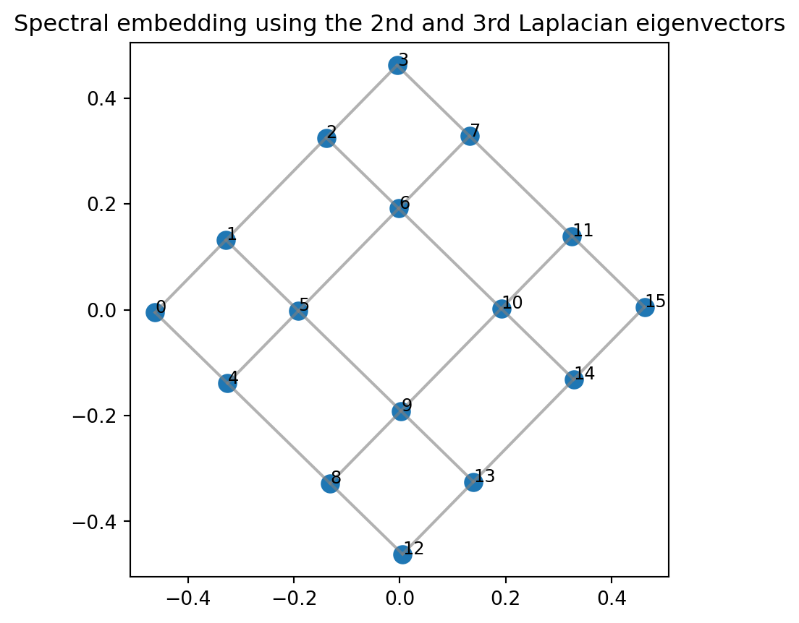
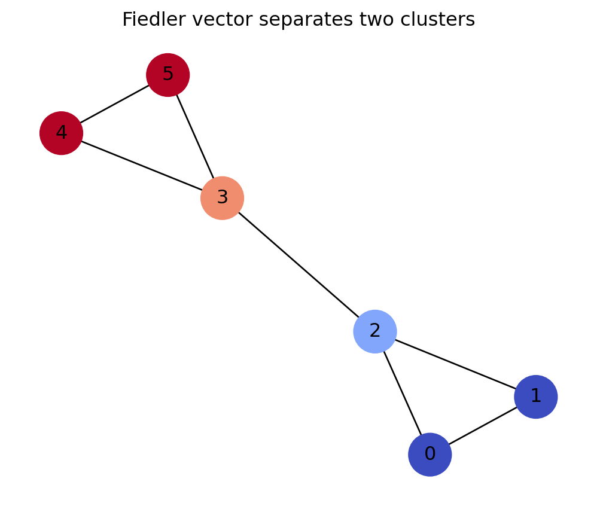

Code
import numpy as np
A = np.array([[0,1,1,1],
[1,0,0,1],
[1,0,0,1],
[1,1,1,0]])
Aarray([[0, 1, 1, 1],
[1, 0, 0, 1],
[1, 0, 0, 1],
[1, 1, 1, 0]])Graphs as matrices, eigenvectors as coordinates, and Laplacians as energy
A graph begins as a picture: dots connected by lines. A social network, a transportation system, a citation network, a power grid, a protein interaction network, and a mesh in numerical simulation can all be drawn this way. But a computer does not see a picture the way we do. It sees arrays of numbers.
The central idea of spectral graph theory is simple and powerful:
A graph becomes a linear algebra object when we encode it as a matrix.
Its eigenvalues and eigenvectors then reveal connectivity, geometry, clustering, and dynamics.
This chapter develops that idea from the ground up. We will build the adjacency matrix, degree matrix, incidence matrix, and graph Laplacian. Then we will use eigenvectors to count walks, detect connected components, draw graphs, and find clusters.
By the end of this chapter, you should be able to:
A graph records relationships among objects. The objects are vertices, and the relationships are edges.
A graph is a vector-space problem in disguise:
An undirected graph is a pair \[ G=(V,E), \] where \(V=\{1,2,\ldots,n\}\) is the vertex set and \(E\) is a set of unordered pairs \(\{i,j\}\) with \(i,j\in V\). The elements of \(E\) are called edges.
A directed graph is a graph whose edges have directions. Its edge set consists of ordered pairs \((i,j)\), meaning an edge points from vertex \(i\) to vertex \(j\).
A weighted graph is a graph together with a weight function \[ w:E\to \mathbb{R}. \] The number \(w_{ij}\) may represent distance, cost, strength of connection, similarity, traffic flow, or probability weight.
The adjacency matrix is the most direct way to convert a graph into a matrix.
Let \(G=(V,E)\) be a simple undirected graph with \(V=\{1,\ldots,n\}\). The adjacency matrix of \(G\) is the matrix \(A=[a_{ij}]\in\mathbb{R}^{n\times n}\) defined by \[ a_{ij}=\begin{cases} 1, & \text{if }\{i,j\}\in E,\\ 0, & \text{otherwise.} \end{cases} \] For a weighted graph, we use \[ a_{ij}=w_{ij} \] when \(\{i,j\}\in E\).
Consider \[ V=\{1,2,3,4\},\qquad E=\{\{1,2\},\{1,3\},\{1,4\},\{2,4\},\{3,4\}\}. \] Then \[ A=\begin{bmatrix} 0&1&1&1\\ 1&0&0&1\\ 1&0&0&1\\ 1&1&1&0 \end{bmatrix}. \] Because the graph is undirected, \(A\) is symmetric.
import numpy as np
A = np.array([[0,1,1,1],
[1,0,0,1],
[1,0,0,1],
[1,1,1,0]])
Aarray([[0, 1, 1, 1],
[1, 0, 0, 1],
[1, 0, 0, 1],
[1, 1, 1, 0]])The adjacency matrix is not just a record of which edges exist. Its powers contain information about paths and walks.
A walk of length \(k\) from vertex \(i\) to vertex \(j\) is a sequence \[ i=v_0,v_1,\ldots,v_k=j \] such that \(\{v_{r-1},v_r\}\in E\) for every \(r=1,\ldots,k\).
The vertices in a walk do not need to be distinct.
Let \(A\) be the adjacency matrix of a simple graph \(G\). Then the \((i,j)\) entry of \(A^k\) equals the number of walks of length \(k\) from vertex \(i\) to vertex \(j\).
For \(k=1\), the statement is the definition of the adjacency matrix. Assume it is true for \(k\). Then \[ (A^{k+1})_{ij}=\sum_{\ell=1}^n (A^k)_{i\ell}A_{\ell j}. \] The term \((A^k)_{i\ell}\) counts walks of length \(k\) from \(i\) to \(\ell\), while \(A_{\ell j}=1\) exactly when there is an edge from \(\ell\) to \(j\). Therefore the product counts walks that go from \(i\) to \(\ell\) in \(k\) steps and then from \(\ell\) to \(j\) in one additional step. Summing over all possible intermediate vertices \(\ell\) counts all walks of length \(k+1\) from \(i\) to \(j\).
A2 = A @ A
A3 = A2 @ A
A2, A3(array([[3, 1, 1, 2],
[1, 2, 2, 1],
[1, 2, 2, 1],
[2, 1, 1, 3]]),
array([[4, 5, 5, 5],
[5, 2, 2, 5],
[5, 2, 2, 5],
[5, 5, 5, 4]]))The entry (A2[0,0]) counts walks of length 2 from vertex 1 back to itself. Indexing in Python starts at 0, so vertex 1 corresponds to index 0.
A2[0,0]3The degree of a vertex counts how many edges touch it.
For an unweighted graph, the degree of vertex \(i\) is \[ d_i=\sum_{j=1}^n a_{ij}. \] The degree matrix is the diagonal matrix \[ D=\operatorname{diag}(d_1,d_2,\ldots,d_n). \] For a weighted graph, \(d_i\) is the sum of weights incident to vertex \(i\).
The unnormalized graph Laplacian is \[ L=D-A. \] Equivalently, for a simple unweighted graph, \[ L_{ij}=\begin{cases} d_i, & i=j,\\ -1, & i\ne j\text{ and }\{i,j\}\in E,\\ 0, & \text{otherwise.} \end{cases} \]
deg = A.sum(axis=1)
D = np.diag(deg)
L = D - A
D, L(array([[3, 0, 0, 0],
[0, 2, 0, 0],
[0, 0, 2, 0],
[0, 0, 0, 3]]),
array([[ 3, -1, -1, -1],
[-1, 2, 0, -1],
[-1, 0, 2, -1],
[-1, -1, -1, 3]]))The Laplacian is important because it measures how much a signal varies across edges.
A vector \[ x=(x_1,\ldots,x_n)^T\in\mathbb{R}^n \] can be viewed as a function on vertices: vertex \(i\) receives value \(x_i\).
Let \(G\) be a weighted undirected graph with weights \(w_{ij}=w_{ji}\ge 0\), and let \(L=D-A\). Then for every \(x\in\mathbb{R}^n\), \[ x^T Lx=\sum_{\{i,j\}\in E} w_{ij}(x_i-x_j)^2. \] In particular, \(L\) is positive semidefinite.
We compute \[ x^TLx=x^TDx-x^TAx. \] Since \(D\) is diagonal, \[ x^TDx=\sum_{i=1}^n d_i x_i^2. \] For an undirected weighted graph, each edge \(\{i,j\}\) contributes \(w_{ij}x_i^2\) once to the degree term for vertex \(i\) and \(w_{ij}x_j^2\) once to the degree term for vertex \(j\). Thus \[ x^TDx=\sum_{\{i,j\}\in E}w_{ij}x_i^2+ \sum_{\{i,j\}\in E}w_{ij}x_j^2. \] Also, \[ x^TAx=2\sum_{\{i,j\}\in E}w_{ij}x_ix_j. \] Therefore \[ x^TLx=\sum_{\{i,j\}\in E}w_{ij}(x_i^2-2x_ix_j+x_j^2) =\sum_{\{i,j\}\in E}w_{ij}(x_i-x_j)^2. \] This is nonnegative for all \(x\), so \(L\) is positive semidefinite.
The quantity \[ x^TLx \] is the energy of the graph signal \(x\). It is small when adjacent vertices have similar values and large when strongly connected vertices have very different values.
x = np.array([1.0, 2.0, -1.0, 0.5])
energy_matrix = x @ L @ x
edges = [(0,1),(0,2),(0,3),(1,3),(2,3)]
energy_edges = sum((x[i]-x[j])**2 for i,j in edges)
energy_matrix, energy_edges(9.75, 9.75)The incidence matrix records how edges meet vertices. It also connects spectral graph theory to topology, because it behaves like a boundary operator.
Choose an orientation for every edge. If \(G\) has \(n\) vertices and \(m\) edges, the incidence matrix \(B\in\mathbb{R}^{n\times m}\) is defined by \[ B_{ve}=\begin{cases} 1, & \text{if edge }e\text{ enters vertex }v,\\ -1, & \text{if edge }e\text{ leaves vertex }v,\\ 0, & \text{otherwise.} \end{cases} \] Some books use the opposite sign convention.
For an unweighted undirected graph, \[ L=BB^T. \] For a weighted graph with edge-weight matrix \(W_e\), one has \[ L=BW_eB^T. \]
For one oriented edge \(e=(i,j)\), the corresponding column \(b_e\) of \(B\) has one entry \(-1\) and one entry \(1\). The rank-one matrix \[ b_e b_e^T \] contributes \[ \begin{bmatrix}1&-1\\-1&1\end{bmatrix} \] to the rows and columns indexed by \(i\) and \(j\). Summing over all edges adds the degrees on the diagonal and \(-1\) in positions corresponding to edges. This gives exactly \(D-A=L\).
B = np.array([[-1,-1,-1, 0, 0],
[ 1, 0, 0,-1, 0],
[ 0, 1, 0, 0,-1],
[ 0, 0, 1, 1, 1]])
B @ B.T, L(array([[ 3, -1, -1, -1],
[-1, 2, 0, -1],
[-1, 0, 2, -1],
[-1, -1, -1, 3]]),
array([[ 3, -1, -1, -1],
[-1, 2, 0, -1],
[-1, 0, 2, -1],
[-1, -1, -1, 3]]))A surprisingly deep graph property appears as a simple eigenvalue statement.
For every graph Laplacian \(L\), \[ L\mathbf{1}=0, \] where \(\mathbf{1}=(1,1,\ldots,1)^T\).
Each row of \(L=D-A\) sums to zero because the diagonal entry is the degree and the off-diagonal entries subtract all adjacent weights. Therefore multiplying by the all-ones vector gives zero.
Let \(G\) be an undirected graph with Laplacian \(L\). The multiplicity of the eigenvalue \(0\) of \(L\) equals the number of connected components of \(G\).
If \(x\in\ker(L)\), then \[ 0=x^TLx=\sum_{\{i,j\}\in E}(x_i-x_j)^2. \] Each term is nonnegative, so each term must be zero. Thus \(x_i=x_j\) whenever vertices \(i\) and \(j\) are connected by an edge. By moving along paths, \(x\) must be constant on each connected component.
Conversely, if \(x\) is constant on each connected component, then every edge connects vertices with equal values, so every difference \(x_i-x_j\) is zero and \(Lx=0\). Therefore the dimension of \(\ker(L)\) equals the number of connected components.
A graph \(G\) is connected if and only if \[ 0=\lambda_1<\lambda_2, \] where \(\lambda_1\le\lambda_2\le\cdots\le\lambda_n\) are the Laplacian eigenvalues.
The number \(\lambda_2\) is called the algebraic connectivity or Fiedler value.
import networkx as nx
G_conn = nx.path_graph(5)
L_conn = nx.laplacian_matrix(G_conn).toarray()
np.linalg.eigvalsh(L_conn)array([9.14382870e-17, 3.81966011e-01, 1.38196601e+00, 2.61803399e+00,
3.61803399e+00])G_disc = nx.Graph()
G_disc.add_edges_from([(0,1),(1,2),(3,4)])
L_disc = nx.laplacian_matrix(G_disc).toarray()
np.linalg.eigvalsh(L_disc)array([0.00000000e+00, 3.96029024e-17, 1.00000000e+00, 2.00000000e+00,
3.00000000e+00])When vertex degrees vary a lot, the ordinary Laplacian can be dominated by high-degree vertices. Normalization corrects for this.
Assume all degrees are positive. The symmetric normalized Laplacian is \[ L_{\mathrm{sym}}=D^{-1/2}LD^{-1/2}=I-D^{-1/2}AD^{-1/2}. \] The random-walk normalized Laplacian is \[ L_{\mathrm{rw}}=D^{-1}L=I-D^{-1}A. \]
The matrix \[ P=D^{-1}A \] is the transition matrix of a random walk on the graph. From vertex \(i\), the walker moves to a neighbor with probability proportional to edge weight.
For any \(x\in\mathbb{R}^n\), let \(y=D^{-1/2}x\). Then \[ x^TL_{\mathrm{sym}}x =x^TD^{-1/2}LD^{-1/2}x =y^TLy\ge 0. \] Thus \(L_{\mathrm{sym}}\) is positive semidefinite.
Two drawings can look different but represent the same graph with different vertex labels.
Two graphs \(G\) and \(H\) are isomorphic if there exists a bijection \[ \sigma:V(G)\to V(H) \] such that vertices \(i\) and \(j\) are adjacent in \(G\) if and only if \(\sigma(i)\) and \(\sigma(j)\) are adjacent in \(H\).
Let \(A_G\) and \(A_H\) be adjacency matrices of two graphs on \(n\) vertices. Then \(G\) and \(H\) are isomorphic if and only if there exists a permutation matrix \(P\) such that \[ A_H=P^T A_G P. \]
A permutation matrix relabels standard basis vectors. Multiplication by \(P\) on the right permutes columns, and multiplication by \(P^T\) on the left permutes rows in the same way. Therefore \(P^TA_GP\) is exactly the adjacency matrix after relabeling the vertices of \(G\). Hence graph isomorphism is equivalent to permutation similarity of adjacency matrices.
If two graphs are isomorphic, then their adjacency matrices have the same eigenvalues. But the converse is false: two non-isomorphic graphs can have the same eigenvalues. Such graphs are called cospectral graphs.
The adjacency spectrum of a graph is the list of eigenvalues of its adjacency matrix \(A\).
The Laplacian spectrum of a graph is the list of eigenvalues of its Laplacian matrix \(L\).
For the complete graph \(K_n\), \[ A=J-I, \] where \(J\) is the all-ones matrix. Therefore the adjacency eigenvalues are \[ n-1,\quad -1,\ldots,-1. \] The Laplacian is \[ L=nI-J, \] so the Laplacian eigenvalues are \[ 0,\quad n,\ldots,n. \]
For the cycle graph \(C_n\), the Laplacian eigenvalues are \[ \lambda_k=2-2\cos\left(\frac{2\pi k}{n}\right),\qquad k=0,1,\ldots,n-1. \] This comes from the fact that circulant matrices are diagonalized by the discrete Fourier basis.
A computer does not know how a graph is “supposed” to look. Spectral graph theory gives a way to assign coordinates to vertices using eigenvectors.
Let \(L\) be the Laplacian of a connected graph. Suppose \[ 0=\lambda_1<\lambda_2\le\lambda_3\le\cdots\le\lambda_n \] are eigenvalues of \(L\) with orthonormal eigenvectors \[ u_1,u_2,\ldots,u_n. \] A two-dimensional spectral embedding places vertex \(i\) at \[ \big((u_2)_i,(u_3)_i\big). \]
The first eigenvector \(u_1\) is constant, so it gives no separation. The next eigenvectors give the smoothest nonconstant coordinates.
Let \(G\) be connected. The second Laplacian eigenvalue satisfies \[ \lambda_2=\min_{x\ne 0,\;x\perp \mathbf{1}} \frac{x^TLx}{x^Tx}. \] A minimizing vector is an eigenvector associated with \(\lambda_2\).
Since \(L\) is symmetric, the spectral theorem gives an orthonormal eigenbasis \[ u_1=\frac{1}{\sqrt n}\mathbf{1},u_2,\ldots,u_n \] with eigenvalues \[ 0=\lambda_1\le\lambda_2\le\cdots\le\lambda_n. \] If \(x\perp \mathbf{1}\), then \[ x=c_2u_2+\cdots+c_nu_n. \] Thus \[ \frac{x^TLx}{x^Tx} =\frac{\sum_{i=2}^n \lambda_i c_i^2}{\sum_{i=2}^n c_i^2} \ge \lambda_2. \] Equality occurs when \(x\) is a multiple of \(u_2\).
import matplotlib.pyplot as plt
G = nx.grid_2d_graph(4, 4)
G = nx.convert_node_labels_to_integers(G)
L = nx.laplacian_matrix(G).toarray()
vals, vecs = np.linalg.eigh(L)
coords = vecs[:, 1:3]
plt.figure(figsize=(5,5))
for i, j in G.edges():
plt.plot([coords[i,0], coords[j,0]], [coords[i,1], coords[j,1]], color="gray", alpha=0.6)
plt.scatter(coords[:,0], coords[:,1], s=80)
for i in range(len(coords)):
plt.text(coords[i,0], coords[i,1], str(i), fontsize=9)
plt.axis("equal")
plt.title("Spectral embedding using the 2nd and 3rd Laplacian eigenvectors")
plt.show()
Spectral clustering uses eigenvectors to identify meaningful groups in a graph.
For \(S\subset V\), define \[ \operatorname{cut}(S,S^c)=\sum_{i\in S,\;j\in S^c}w_{ij}. \] A small cut means the graph can be separated into two parts by removing only a small number of weak edges.
The reason eigenvectors help is the quadratic form \[ x^TLx=\sum_{\{i,j\}\in E}w_{ij}(x_i-x_j)^2. \] Low-energy vectors tend to be nearly constant inside strongly connected communities and change mostly across weak connections.
G = nx.Graph()
G.add_edges_from([(0,1),(1,2),(2,0),
(3,4),(4,5),(5,3),
(2,3)])
L = nx.laplacian_matrix(G).toarray()
vals, vecs = np.linalg.eigh(L)
fiedler = vecs[:,1]
vals, fiedler(array([-1.30552502e-16, 4.38447187e-01, 3.00000000e+00, 3.00000000e+00,
3.00000000e+00, 4.56155281e+00]),
array([-0.46470513, -0.46470513, -0.26095647, 0.26095647, 0.46470513,
0.46470513]))pos = nx.spring_layout(G, seed=2)
plt.figure(figsize=(5,4))
nx.draw(G, pos, with_labels=True, node_color=fiedler, cmap="coolwarm", node_size=700)
plt.title("Fiedler vector separates two clusters")
plt.show()
A simple spectral clustering rule is:
\[ S=\{i:(u_2)_i<0\},\qquad S^c=\{i:(u_2)_i\ge 0\}. \]
Let \[ A=\begin{bmatrix} 0&1&1\\ 1&0&0\\ 1&0&0 \end{bmatrix}. \] Interpret this matrix as the adjacency matrix of a graph. Compute \(A^2\) and explain what the entries mean.
The graph has edges \(\{1,2\}\) and \(\{1,3\}\). We compute \[ A^2=\begin{bmatrix} 2&0&0\\ 0&1&1\\ 0&1&1 \end{bmatrix}. \] The entry \((A^2)_{ij}\) counts length-2 walks from vertex \(i\) to vertex \(j\). For example, \((A^2)_{11}=2\) because \[ 1\to 2\to 1,\qquad 1\to 3\to 1 \] are the two length-2 walks from vertex 1 back to itself.
Suppose a graph has Laplacian eigenvalues \[ 0,0,0,2,3,5. \] How many connected components does the graph have?
The multiplicity of the eigenvalue \(0\) equals the number of connected components. Since \(0\) appears three times, the graph has three connected components.
Suppose \[ A_H=P^TA_GP \] for some permutation matrix \(P\). What can we conclude about the eigenvalues of \(A_G\) and \(A_H\)? Does the converse hold?
The matrices \(A_G\) and \(A_H\) are similar because \(P^T=P^{-1}\). Therefore they have the same eigenvalues. The converse does not hold in general: non-isomorphic graphs can have the same adjacency spectrum.
A connected graph has second Laplacian eigenvector approximately \[ (-0.42,-0.39,-0.36,0.35,0.40,0.43). \] What clustering does this suggest?
The signs suggest two clusters: \[ \{1,2,3\}\quad \text{and}\quad \{4,5,6\}. \] The vector is nearly constant on each group and changes sign between the two groups.
For the path graph \(1-2-3-4\), write down the adjacency matrix \(A\), the degree matrix \(D\), and the Laplacian \(L\).
\[ A=\begin{bmatrix} 0&1&0&0\\ 1&0&1&0\\ 0&1&0&1\\ 0&0&1&0 \end{bmatrix}, \quad D=\begin{bmatrix} 1&0&0&0\\ 0&2&0&0\\ 0&0&2&0\\ 0&0&0&1 \end{bmatrix}. \] Thus \[ L=D-A=\begin{bmatrix} 1&-1&0&0\\ -1&2&-1&0\\ 0&-1&2&-1\\ 0&0&-1&1 \end{bmatrix}. \]
For the triangle graph \(K_3\), compute \(A^2\) and interpret \((A^2)_{12}\).
For \(K_3\), \[ A=\begin{bmatrix} 0&1&1\\ 1&0&1\\ 1&1&0 \end{bmatrix}. \] Then \[ A^2=\begin{bmatrix} 2&1&1\\ 1&2&1\\ 1&1&2 \end{bmatrix}. \] The entry \((A^2)_{12}=1\) means there is one walk of length 2 from vertex 1 to vertex 2, namely \(1\to 3\to 2\).
Prove that \(L\mathbf{1}=0\) for every graph Laplacian.
Each row of \(L=D-A\) sums to zero. Therefore multiplying by the all-ones vector gives the zero vector: \[ L\mathbf{1}=0. \]
A graph has Laplacian eigenvalues \[ 0,0,1,1,4. \] How many connected components does it have?
The zero eigenvalue has multiplicity two. Therefore the graph has two connected components.
Explain why a low-energy graph signal should be nearly constant on strongly connected parts of a graph.
The Laplacian energy is \[ x^TLx=\sum_{\{i,j\}\in E}w_{ij}(x_i-x_j)^2. \] If \(w_{ij}\) is large, then a difference \(x_i-x_j\) is heavily penalized. Therefore low-energy signals tend to assign similar values to strongly connected adjacent vertices.
Use an AI assistant as a study partner, but verify all computations with Python or by hand.
Ask:
Create a graph with six vertices and eight edges. Write its adjacency matrix, degree matrix, and Laplacian matrix. Then verify the matrices in Python.
Ask:
Explain why the Laplacian quadratic form measures smoothness of a graph signal. Give one example from social networks and one example from image segmentation.
Ask:
Give me a step-by-step proof that the number of connected components equals the multiplicity of the zero eigenvalue of the graph Laplacian. Then ask me questions to check my understanding.
Ask:
Generate Python code for a graph with two dense clusters connected by a few bridge edges. Compute the Fiedler vector and use it to cluster the vertices.
The chapter’s main message is:
Graphs become computable when they become matrices.
The adjacency matrix records edges and counts walks through powers. The degree matrix records local connectivity. The Laplacian \[ L=D-A \] measures variation of graph signals through \[ x^TLx=\sum_{\{i,j\}\in E}w_{ij}(x_i-x_j)^2. \] The zero eigenvalue counts connected components. The second eigenvector gives a powerful coordinate for graph drawing and clustering. Spectral graph theory is therefore a bridge from networks to linear algebra, data science, and computation.